Chercheur en sciences de l'information géographique
GeOxygene 3D
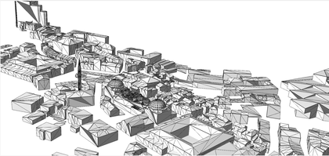
Données COLLADA représentant Istanbul.
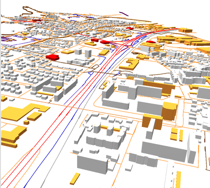
Représentation de la BD Topo.
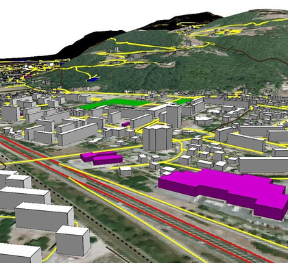
Représentation BD TOPO et MNT texturé.
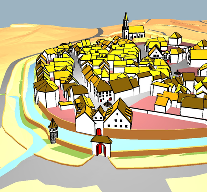
Données CITYGML LOD3 sur la ville d'Ettenheim.
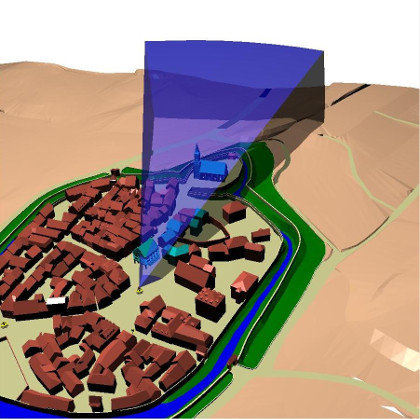
Calcul d'intervisibilité dans GeOxygene3D.
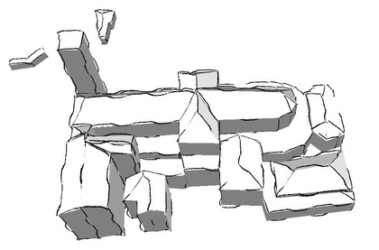
Représentation d'arêtes stylisées avec GeOxygene.Vidéo de GeOxygene 3D (2008) présenté au Festival de St Dié des Vosges.Vidéo de GeOxygene 3D (2008) présenté aux journées SIG-La-Lettre.
Analyse 3D
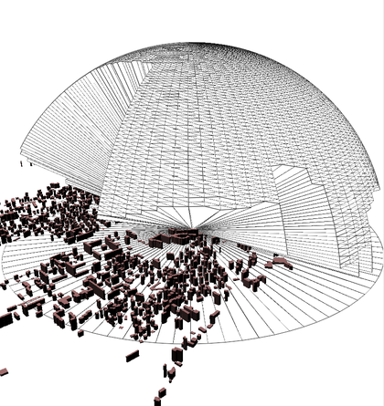
Représentation 3D des points visibles à partir d'un sommet.
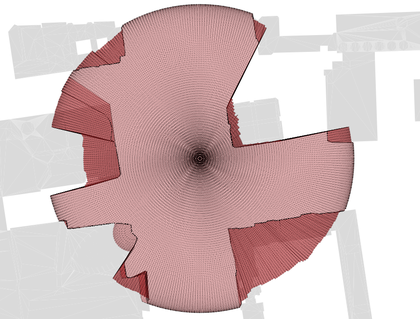
Représentation 2D des points visibles à partir d'un sommet.
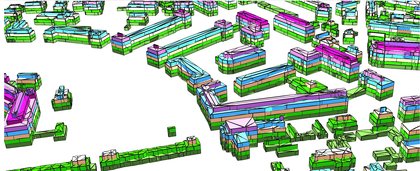
Calcul des étages de bâtiments à partir de données LOD3.
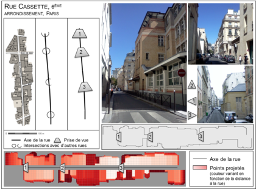
Profil de rue calculé et comparatif avec le terrain (Stage de Marina Fund, 2014).
Simulation de formes bâties 3D
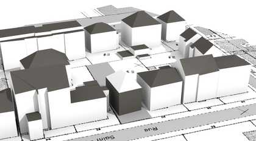
Génération d'un bâtiment au sein d'une parcelle.
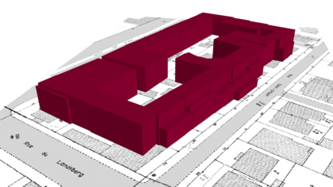
Simulation des parcelles d'un ilôt.
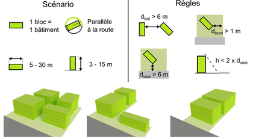
Génération d'un même jeu de règles sur différentes formes de parcelles.
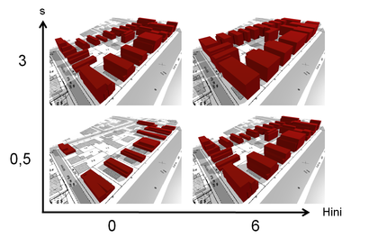
Simulation de différentes règles sur un ensemble de parcelles.Itérations d'une simulation d'un bâtiment composite.Itérations d'une simulation de plusieurs bâtiments simples.Vidéo de présentation des recherches sur les dynamiques spatiales (Simulation 4min10).
Visualisation 3D
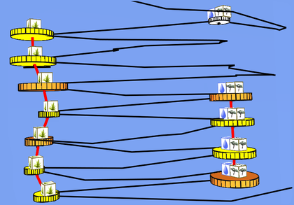
Visualisation dans un space-time cube des allers retours entre deux lieux de pause pour un groupe d'éléphants (Buard & Brasebin, 2011).
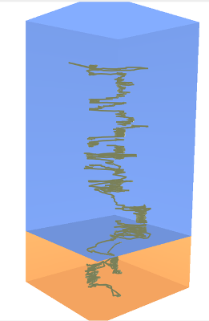
Visualisation des déplacements d'éléphants en saison humide et sèche (Buard & Brasebin, 2011).
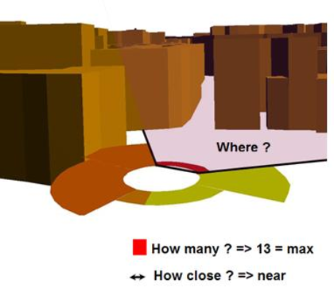
Visualisation de la répartition de points d'intérêt à partir d'une variable visuelle (Brasebin et , 2010).
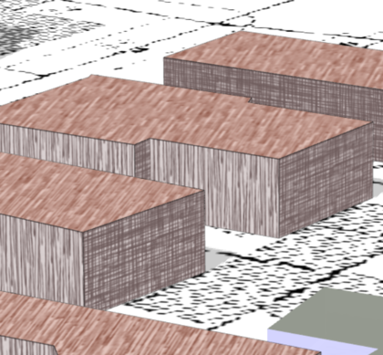
Représentation hachurée de simulation de bâtiments (Brasebin & al, 2016).
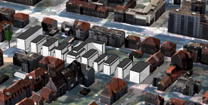
Représentation hachurée avec des arêtes crayonnes de simulations de bâtiments (Brasebin & al, 2016).